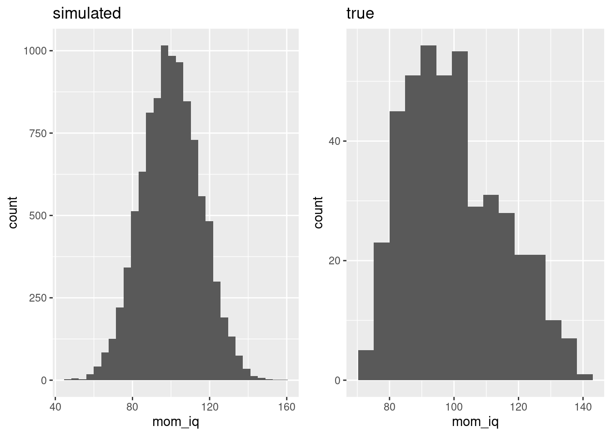
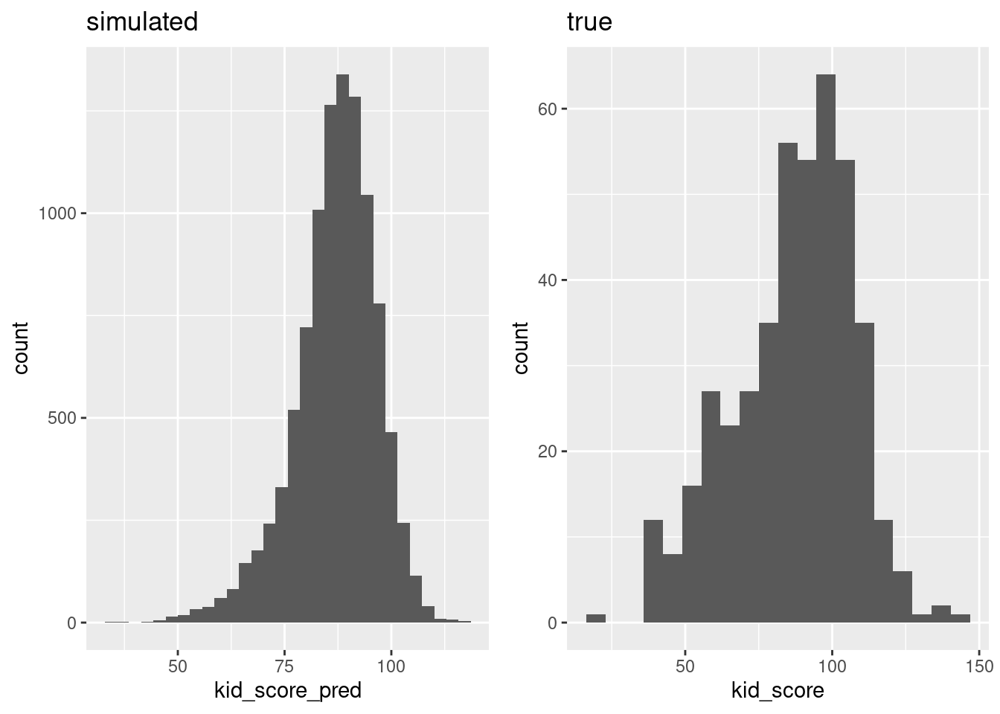
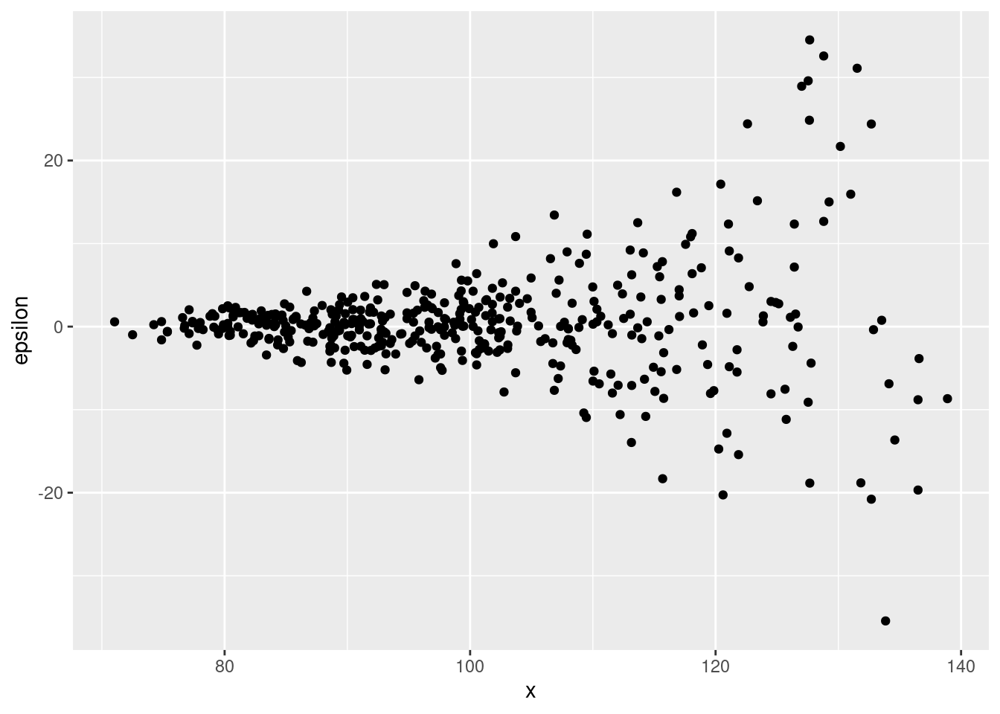

Lesson 4 Predictive Regression Part II
In our last lesson we covered the basics of predictive linear regression using lm(). We learned how to use formulas to set up different regression models, how to use summary() and broom() to display and format the results, and how to make simple plots of the regression line using ggplot(). We applied these tools to a simple dataset of kids test scores and discussed the correct way to interpret the results. In this lesson we'll complete our discussion of predictive linear regression by answering some frequently asked questions:
- How can I extract predictions from a fitted regression model?
- I need to test a linear restriction. Is there a way to do this in R?
- What about heteroskedasticity? Can I use R to compute robust standard errors?
- Journal articles have beautifully-formatted tables of regression results. How can I make one?
4.1 Regressions Used Below
At several points in this lesson we'll find it helpful to have a few different sets of regression results at our fingertips, so I'll start by fitting three regressions from our last lesson, using the child test score dataset:
reg_pooledis a regression ofkid_scoreonmom_iqthat pools children whose mothers graduated high school with those whose mothers did not.reg_hs_dummyis a regression ofkid_scoreonmom_iqandmom_hs. Recall thatmom_hsis a dummy variable that equals one if a child's mother attended high school.reg_interactis a regression ofkid_scoreonmom_iq,mom_hs, and their interaction.
library(tidyverse)
kids <- read_csv("http://ditraglia.com/data/child_test_data.csv")
kids <- kids %>%
rename(kid_score = kid.score,
mom_hs = mom.hs,
mom_iq = mom.iq,
mom_age = mom.age)
reg_pooled <- lm(kid_score ~ mom_iq, kids)
reg_hs_dummy <- lm(kid_score ~ mom_iq + mom_hs, kids)
reg_interact <- lm(kid_score ~ mom_iq * mom_hs, kids)4.2 Predicting New Observations
The predict() command allows us to predict new observations using a fitted statistical model. As we'll see in future lessons, predict() works with a variety of models besides linear regression. In this lesson we'll restrict our attention to making predictions based on a linear regression fitted with lm().
The simplest way to use predict() is by passing it a single argument: a regression fitted with lm(). When used in this way, it returns the vector of fitted values from the regression. As such predict([REGRESSION]) is synonymous with fitted.values([REGRESSION]):
yhat1 <- predict(reg_hs_dummy)
yhat2 <- fitted.values(reg_hs_dummy)
head(cbind(yhat1, yhat2))## yhat1 yhat2
## 1 99.98056 99.98056
## 2 82.07336 82.07336
## 3 96.78075 96.78075
## 4 87.76191 87.76191
## 5 83.98152 83.98152
## 6 86.57804 86.57804This make sense if you think of the fitted values as in-sample predictions, the predictions that we would make for the individuals we used to fit our regression. To make predictions for new individuals, we need to supply a second argument to predict(), a data frame called newdata. This data frame should have the same column names as the data we used to fit our regression, and contain the same kind of information. In short: newdata contains the predictors \(X\) for one or more individuals who are not in our dataset; given this information, predict() extracts the estimated regression coefficients \(\widehat{\beta}\) and computes \(X\widehat{\beta}\).
Let's try a simple example. Suppose we wanted to use reg_pooled_hs to predict kid_score for a child whose mother has an IQ of 100 and did not graduate from high school. One way to do this is "by hand" using coef()
b_hat <- coef(reg_hs_dummy)
b_hat## (Intercept) mom_iq mom_hs
## 25.731538 0.563906 5.950117b_hat[1] + b_hat[2] * 100 + 0 * b_hat[3]## (Intercept)
## 82.12214Another is by first constructing a data frame with information on this particular hypothetical child and passing it as the newdata argument of predict():
new_kid <- data.frame(mom_iq = 100, mom_hs = 0)
new_kid## mom_iq mom_hs
## 1 100 0predict(reg_hs_dummy, new_kid)## 1
## 82.12214The real value of the second approach becomes apparent when we want to make multiple predictions at once. For example,
new_kids <- data.frame(mom_iq = c(100, 120, 80),
mom_hs = c( 0, 1, 1))
predict(reg_hs_dummy, new_kids)## 1 2 3
## 82.12214 99.35038 76.79414It's crucial that the names of the columns in newdata match those of the regression that you pass as the first argument to predict(). This, for example will throw an error:
other_kids <- data.frame(iq = c(100, 120, 80),
hs = c( 0, 1, 1))
predict(reg_hs_dummy, other_kids)## Error in eval(predvars, data, env): object 'mom_iq' not foundIncluding extraneous columns in newdata, on the other hand, is perfectly fine. This can come in handy when you want to predict from multiple different fitted regressions. For example, it's perfectly fine to predict using reg_pooled and new_kids even though reg_pooled does not include mom_hs as a predictor:
predict(reg_pooled, new_kids)## 1 2 3
## 86.79724 98.99673 74.59774Before I turn you loose on the exercise, here's one more useful trick that doesn't technically count as a use of predict(), but is closely related. In our last lesson we learned how to use augment() from the broom package to add a column with residuals and fitted values to a data frame that we used to fit a regression. It turns out that we can use the same idea to add predicted values to a data frame of \(X\) values at which we'd like to predict. For example, to add the result of running predict(reg_pooled, new_kids) as an additional column of new_kids, we can run the following line of code:
library(broom)
augment(reg_pooled, newdata = new_kids)## # A tibble: 3 × 3
## mom_iq mom_hs .fitted
## <dbl> <dbl> <dbl>
## 1 100 0 86.8
## 2 120 1 99.0
## 3 80 1 74.6The third column is still called .fitted but in this case it actually contains predicted values. Note that these agree perfectly with those that we computed above. To avoid confusion, it's worth renaming this column using the rename() command from dplyr
augment(reg_pooled, newdata = new_kids) %>%
rename(kid_score_pred = .fitted)## # A tibble: 3 × 3
## mom_iq mom_hs kid_score_pred
## <dbl> <dbl> <dbl>
## 1 100 0 86.8
## 2 120 1 99.0
## 3 80 1 74.64.2.1 Exercise
- What values of
kid_scorewould we predict for the children in the data framenew_kidsbased on the results of the regressionreg_interact?
predict(reg_interact, new_kids)## 1 2 3
## 85.40690 97.93995 78.55537- Approximately 80% of the children in our
kidsdataset have mothers who graduated high school. The average IQ of these mothers is around 102 with a standard deviation of 15. For the 20% of mothers who did not graduate, the average IQ is around 92 with a standard deviation of 13. Under the assumption that the IQ for each group of mothers follows a normal distribution in the population as a whole, use this information to generate 10,000 simulated kids. Store their values ofmom_iqandmom_hsas the columns of a data frame calledsim_kids. Plot a histogram of the simulated values ofmom_iq. How do they compare to the true values ofmom_iqfromkids?
First construct a vector of simulated mom_hs values using rbinom(). Call it mom_hs_sim. Next use ifelse() to construct a vector of means, mu, and standard deviations, sigma, that correspond to mom_hs_sim. Pass these as arguments to rnorm() to construct the simulated values of mom_iq.
n_sim_kids <- 1e4
set.seed(54321)
mom_hs_sim <- rbinom(n_sim_kids, 1, 0.8)
mu <- ifelse(mom_hs_sim == 0, 92, 102)
sigma <- ifelse(mom_hs_sim == 0, 13, 15)
mom_iq_sim <- rnorm(n_sim_kids, mean = mu, sd = sigma)
sim_kids <- data.frame(mom_iq = mom_iq_sim,
mom_hs = mom_hs_sim)
# Here I *store* the plot rather than displaying it, so I can
# put it next to the plot of the true mom_iq values
sim_mom_iq_plot <- sim_kids %>%
ggplot() +
geom_histogram(aes(x = mom_iq), bins = 30) +
ggtitle('simulated')
# Again, I *store* the plot rather than displaying it
true_mom_iq_plot <- kids %>%
ggplot() +
geom_histogram(aes(x = mom_iq), bins = 15) +
ggtitle('true')
# grid.arrange() from the gridExtra package is a handy way of
# arranging multiple ggplots in a grid
library(gridExtra)
grid.arrange(sim_mom_iq_plot, true_mom_iq_plot, ncol = 2) 
The distribution of mom_iq_sim is roughly symmetric and unimodel. The actual distribution of mom_iq clearly isn't.
- Use
augment()frombroomtoo add a column calledkid_score_predtosim_kids, containing the predicted test scores for these simulated children based on the fitted regressionreg_interact. Plot a histogram ofkid_score_predand compare it to that ofkid_scorefromkids.
# Store rather than display this plot
kid_score_pred_plot <- augment(reg_interact, newdata = sim_kids) %>%
rename(kid_score_pred = .fitted) %>%
ggplot() +
geom_histogram(aes(x = kid_score_pred), bins = 30) +
ggtitle('simulated')
# Store rather than display this plot
kid_score_plot <- kids %>%
ggplot() +
geom_histogram(aes(x = kid_score), bins = 20) +
ggtitle('true')
# As above: a handy way of arranging multiple ggplots
# in a grid layout
grid.arrange(kid_score_pred_plot, kid_score_plot, ncol = 2) 
The distribution of kid_score_pred is clearly left skewed, like that of kid_score. But there are some important differences: our simulation produces values of kid_score that are too tightly clustered around the mode. In the real data, scores below 50 and above 100 are common, but in the simulation they're extremely rare.
4.3 Testing a Linear Restriction
Null hypothesis significance testing (NHST) is widely-used, and widely abused. In a future lesson I'll try to convince you that it's rarely of much practical use in applied work.11 That said, there are some special situations where a hypothesis test can come in handy. More importantly, if you want to replicate the work of researchers who haven't gotten the memo on statistical significance, you need to know something about NHST. In this section we'll learn how to carry out classical test of a linear restriction. For the moment I will assume that the regression errors are homoskedastic. Later in this lesson we'll learn how to adjust for heteroskedasticity.
The regression output provided by summary(), or in a tidier form by tidy(), makes it easy to test a null hypothesis of the form \(H_0\colon \beta_j = 0\) against the two-sided alternative \(H_1 \colon \beta_j \neq 0\). Not only do they provide the point estimates \(\widehat{\beta}_j\) and associated standard errors \(\text{SE}_j\), they also provide the t-statistic \(\widehat{\beta}_j/\text{SE}_j\) and p-value for this very null hypothesis! In this example, we would soundly reject the null hypothesis that the coefficient on mom_iq is zero:
tidy(reg_pooled)## # A tibble: 2 × 5
## term estimate std.error statistic p.value
## <chr> <dbl> <dbl> <dbl> <dbl>
## 1 (Intercept) 25.8 5.92 4.36 1.63e- 5
## 2 mom_iq 0.610 0.0585 10.4 7.66e-23For any other test that we might want to carry out, however, this output is less helpful. Suppose that we wanted to test \(H_0\colon \beta_j = b\) against the two-sided alternative where \(b\) is some constant that does not equal zero. We could of course construct the t-statistic "by hand" using the regression output. For example, we construct the test statistic for a test of the null hypothesis that the coefficient on mom_iq equals 1 as follows:
results_pooled <- tidy(reg_pooled)
b <- 1
test_stat <- with(results_pooled, abs(estimate[2] - b) / std.error[2])
test_stat## [1] 6.664718From there we could calculate a p-value if desired. This approach works, but it's tedious. It also leaves us with ample opportunity to make a careless error in the calculation. Fortunately there's a better way!
Testing \(H_0\colon \beta_j = b\) is a special case of the more general problem of testing a linear restriction. In full generality, a test of a linear restriction takes the form \[ H_0\colon \mathbf{R}\beta = \mathbf{q} \quad \text{versus} \quad H_1\colon \mathbf{R}\beta \neq \mathbf{q} \] where \(\mathbf{R}\) is a \(J \times K\) matrix of constants, \(\mathbf{q}\) is \(J\)-vector of constants, and \(\beta\) is the regression parameter vector. If you haven't seen this before or have nightmares because you have seen it before, don't be put off: the only reason I'm showing you this notation is to clarify which kinds of hypotheses constitute a linear restriction. Here are a some examples. Each of them can be written in the form given above by choosing the appropriate \(\mathbf{R}\) matrix and \(\mathbf{q}\) vector:
- \(H_0\colon \beta_j = 2\)
- \(H_0\colon \beta_1 = \beta_2\)
- \(H_0\colon \beta_1 + \beta_2 + \beta_3 = 1\)
- \(H_0\colon \beta_1 = 0 \text{ and } \beta_2 = \beta_3\)
The linearHypothesis() command from the car package makes it easy to conduct a Wald test of a linear restriction based on a regression model fitted with lm(). The first argument of linearHypothesis() is the unrestricted model, a regression that we've already fit using lm().12 The second argument is a description of the hypothesis we wish to test. For example to test that the coefficient on mom_iq equals 1, we can use the following command:
library(car)
linearHypothesis(reg_pooled, 'mom_iq = 1')## Linear hypothesis test
##
## Hypothesis:
## mom_iq = 1
##
## Model 1: restricted model
## Model 2: kid_score ~ mom_iq
##
## Res.Df RSS Df Sum of Sq F Pr(>F)
## 1 433 158958
## 2 432 144137 1 14820 44.419 8.107e-11 ***
## ---
## Signif. codes: 0 '***' 0.001 '**' 0.01 '*' 0.05 '.' 0.1 ' ' 1To test that the intercept equals zero, a very silly hypothesis indeed, we simply need to replace 'mom_iq = 1' with '(Intercept) = 0'
linearHypothesis(reg_pooled, '(Intercept) = 1')## Linear hypothesis test
##
## Hypothesis:
## (Intercept) = 1
##
## Model 1: restricted model
## Model 2: kid_score ~ mom_iq
##
## Res.Df RSS Df Sum of Sq F Pr(>F)
## 1 433 149998
## 2 432 144137 1 5860.4 17.564 3.37e-05 ***
## ---
## Signif. codes: 0 '***' 0.001 '**' 0.01 '*' 0.05 '.' 0.1 ' ' 1To test the joint null hypothesis that both of these restrictions hold simultaneously, we supply a vector as the second argument. Each element of the vector describes one of the restrictions:
linearHypothesis(reg_pooled, c('mom_iq = 1', '(Intercept) = 1'))## Linear hypothesis test
##
## Hypothesis:
## mom_iq = 1
## (Intercept) = 1
##
## Model 1: restricted model
## Model 2: kid_score ~ mom_iq
##
## Res.Df RSS Df Sum of Sq F Pr(>F)
## 1 434 246503
## 2 432 144137 2 102366 153.4 < 2.2e-16 ***
## ---
## Signif. codes: 0 '***' 0.001 '**' 0.01 '*' 0.05 '.' 0.1 ' ' 1By default linearHypothesis() carries out inference based on the F statistic. This is the "finite sample" Wald test. If you prefer the asymptotic version, based on a Chi-squared statistic, set the option test = 'Chisq', for example
linearHypothesis(reg_pooled, test = 'Chisq',
c('mom_iq = 1', '(Intercept) = 1'))## Linear hypothesis test
##
## Hypothesis:
## mom_iq = 1
## (Intercept) = 1
##
## Model 1: restricted model
## Model 2: kid_score ~ mom_iq
##
## Res.Df RSS Df Sum of Sq Chisq Pr(>Chisq)
## 1 434 246503
## 2 432 144137 2 102366 306.81 < 2.2e-16 ***
## ---
## Signif. codes: 0 '***' 0.001 '**' 0.01 '*' 0.05 '.' 0.1 ' ' 1In this example it makes hardly any difference wich version of the test we use.
4.3.1 Exercise
- Test the joint null hypothesis that the slope and intercept of the predictive relationship between
kid_scoreandmom_iqis the same for kids whose mothers graduated from high school and those whose mothers did not. Does the p-value change much if you use the asymptotic version of the test rather than the finite-sample F?
tidy(reg_interact)## # A tibble: 4 × 5
## term estimate std.error statistic p.value
## <chr> <dbl> <dbl> <dbl> <dbl>
## 1 (Intercept) -11.5 13.8 -0.835 4.04e- 1
## 2 mom_iq 0.969 0.148 6.53 1.84e-10
## 3 mom_hs 51.3 15.3 3.34 9.02e- 4
## 4 mom_iq:mom_hs -0.484 0.162 -2.99 2.99e- 3linearHypothesis(reg_interact, c('mom_hs = 0', 'mom_iq:mom_hs = 0'))## Linear hypothesis test
##
## Hypothesis:
## mom_hs = 0
## mom_iq:mom_hs = 0
##
## Model 1: restricted model
## Model 2: kid_score ~ mom_iq * mom_hs
##
## Res.Df RSS Df Sum of Sq F Pr(>F)
## 1 432 144137
## 2 430 138879 2 5258.7 8.1411 0.0003386 ***
## ---
## Signif. codes: 0 '***' 0.001 '**' 0.01 '*' 0.05 '.' 0.1 ' ' 1linearHypothesis(reg_interact, test = 'Chisq',
c('mom_hs = 0', 'mom_iq:mom_hs = 0'))## Linear hypothesis test
##
## Hypothesis:
## mom_hs = 0
## mom_iq:mom_hs = 0
##
## Model 1: restricted model
## Model 2: kid_score ~ mom_iq * mom_hs
##
## Res.Df RSS Df Sum of Sq Chisq Pr(>Chisq)
## 1 432 144137
## 2 430 138879 2 5258.7 16.282 0.0002913 ***
## ---
## Signif. codes: 0 '***' 0.001 '**' 0.01 '*' 0.05 '.' 0.1 ' ' 1- Let
nbe the number of rows inkids. Generate two random vectors as follows:xis a vector ofnindependent standard normal noise whilezequalsmom_iqplus a vector of independent standard normal noise. Carry out a new regression,reg_augmented, that augmentsreg_interactby adding the predictorsxandz. Then carry out an F-test the null hypothesis thatxandzare irrelevant for predictingmpgafter taking into accountmom_iqandmom_hs. Interpret your findings. Do the results of the test make sense?
set.seed(54321)
n <- nrow(kids)
x <- rnorm(n)
z <- kids$mom_iq + rnorm(n)
reg_augmented <- lm(kid_score ~ mom_iq * mom_hs + x + z, kids)
tidy(reg_augmented)## # A tibble: 6 × 5
## term estimate std.error statistic p.value
## <chr> <dbl> <dbl> <dbl> <dbl>
## 1 (Intercept) -11.3 13.8 -0.818 0.414
## 2 mom_iq 1.32 0.903 1.46 0.146
## 3 mom_hs 51.2 15.4 3.33 0.000937
## 4 x 0.839 0.849 0.988 0.324
## 5 z -0.349 0.881 -0.396 0.692
## 6 mom_iq:mom_hs -0.483 0.163 -2.97 0.00311linearHypothesis(reg_augmented, c('x = 0', 'z = 0'))## Linear hypothesis test
##
## Hypothesis:
## x = 0
## z = 0
##
## Model 1: restricted model
## Model 2: kid_score ~ mom_iq * mom_hs + x + z
##
## Res.Df RSS Df Sum of Sq F Pr(>F)
## 1 430 138879
## 2 428 138497 2 381.94 0.5902 0.5547These results make sense: x was randomly generated so it clearly has nothing to do with kid_score. In contrast, because it's related to mom_iq, z clearly is related to kid_score, but doesn't contain and additional predictive information beyond that already contained in mom_iq.
4.4 Heteroskedasticity-Robust Standard Errors and Tests
Consider a linear regression model of the form \(Y_i = X_i'\beta + \epsilon_i\).
If the variance of \(\epsilon_i\) is unrelated to the predictors \(X_i\), we say that the regression errors are homoskedastic. This is just a fancy Greek work for constant variance. If instead, the variance of \(\epsilon_i\) depends on the value of \(x_i\), we say that the regression errors are heteroskedastic. This is just a fancy Greek word for non-constant variance. Heteroskedasticity does not invalidate our least squares estimates of \(\beta\), but it does invalidate the formulas used by lm() to calculate standard errors and p-values. Fortunately there's a simple solution. In this lesson I'll show you how to implement the solution without explaining how it works. In a future lesson we'll take a closer look at robust standard errors
The command lm_robust() from the estimatr package works exactly like lm() except that it uses heteroskedasticity-robust standard errors by default. If you're familiar with Stata, lm_robust() is the equivalent of reg robust. Let's test this out on our model kid_score ~ mom_iq * mom_hs from above. Notice that the coefficients in reg_interact_robust are identical to those from reg_interact
library(estimatr)
reg_interact_robust <- lm_robust(kid_score ~ mom_iq * mom_hs, kids)
cbind(lm = coef(reg_interact), lm_robust = coef(reg_interact_robust))## lm lm_robust
## (Intercept) -11.4820211 -11.4820211
## mom_iq 0.9688892 0.9688892
## mom_hs 51.2682234 51.2682234
## mom_iq:mom_hs -0.4842747 -0.4842747The standard errors, on the other hand, are different:
data.frame(tidy(reg_interact)[c('term', 'std.error')],
robust.std.error = tidy(reg_interact_robust)$std.error)## term std.error robust.std.error
## 1 (Intercept) 13.7579737 13.4927605
## 2 mom_iq 0.1483437 0.1443046
## 3 mom_hs 15.3375805 15.1188068
## 4 mom_iq:mom_hs 0.1622171 0.1581182In this example the heteroskedasticity-robust standard errors are slightly smaller, although the difference is too small to be of practical relevance. As a general rule, correcting for possible heteroskedasticity tends to increase our standard errors, but this is not always the case, as we see from the preceding example.
There are actually various different "flavors" of heteroskedasticity-robust standard errors: HC0, HC1, HC2, and HC3. We'll have more to say about these in a future lesson. For now, the important thing to know is that lm_robust() defaults to HC2 whereas Stata defaults to HC1. To obtain a different flavor of robust standard error, you can set the se_type argument. To obtain standard errors that match those computed by reg robust in Stata you can either set se_type = 'HC1' or se_type = 'stata'. They do the same thing, but the latter is easier to remember.
Heteroskedasticity doesn't just invalidate inference based on the t-tests from the lm summary output; it also invalidates any that we carry out by passing these results to linearHypothesis. Fortunately, there's an easy fix: as long as we fit our regression using lm_robust in place of lm, linearHypothesis will automatically carry out a heteroskedasticity-robust test. For example:
linearHypothesis(reg_interact_robust, 'mom_iq = 0.8')## Linear hypothesis test
##
## Hypothesis:
## mom_iq = 0.8
##
## Model 1: restricted model
## Model 2: kid_score ~ mom_iq * mom_hs
##
## Res.Df Df Chisq Pr(>Chisq)
## 1 431
## 2 430 1 1.3698 0.2419Because the robust test relies on an asymptotic result, it uses a \(\chi^2\) distribution. The non-robust test based on reg_interact is slightly different even if we set test = 'Chisq'
linearHypothesis(reg_interact, 'mom_iq = 0.8', test = 'Chisq')## Linear hypothesis test
##
## Hypothesis:
## mom_iq = 0.8
##
## Model 1: restricted model
## Model 2: kid_score ~ mom_iq * mom_hs
##
## Res.Df RSS Df Sum of Sq Chisq Pr(>Chisq)
## 1 431 139297
## 2 430 138879 1 418.63 1.2962 0.2549Although both of these tests use a \(\chi^2\) distribution with one degree of freedom, the test statistic differs between them. This is because the robust test uses a different variance-covariance matrix estimate when forming the Wald statistic.
4.4.1 Exercise
- If we had run
reg robustin Stata, what standard errors would we have obtained in the regression modelkid_score ~ mom_iq * mom_hsfrom above?
lm_robust(kid_score ~ mom_iq * mom_hs, kids, se_type = 'stata') %>%
tidy() %>%
select(term, std.error)## term std.error
## 1 (Intercept) 13.3292049
## 2 mom_iq 0.1423952
## 3 mom_hs 14.9719985
## 4 mom_iq:mom_hs 0.1563629- Set
xequal tomom_iqfromkidsand letnequallength(x). Generate a vector of independent mean zero errorsepsilonwith standard deviation equal toexp(1.3 + 0.8 * scale(x)). Read the help file forscale()to make sure you understand what this function does. Plotxagainstepsilon. Are the errors contained inepsilonhomoskedastic? Explain briefly.
set.seed(4321)
x <- kids$mom_iq
n <- length(x)
epsilon <- rnorm(n, mean = 0, sd = exp(1.3 + 0.8 * scale(x)))
qplot(x, epsilon)
The errors epsilon are clearly heteroskedastic: their variance is an increasing function of x. We can see this clearly in the plot: the values of epsilon "fan out" as x increases.
- Generate a vector of simulated outcomes
yaccording toy <- a + b * x + epsilonwhereaandbare the intercept and slope fromreg_pooled. Then regressyonxand calculate three kinds of standard errors: the usual ones fromlm(), the HC2-flavored robust versions fromlm_robust(), and the ones that would be produced by the Stata commandreg robust. Comment on the differences between them.
y <- fitted.values(reg_pooled) + epsilon
reg_sim <- lm(y ~ x)
reg_sim_robust <- lm_robust(y ~ x)
reg_sim_stata <- lm_robust(y ~ x, se_type = 'stata')
data.frame(tidy(reg_sim)[, c('term', 'std.error')],
HC2.std.error = tidy(reg_sim_robust)$std.error,
stata.std.error = tidy(reg_sim_stata)$std.error)## term std.error HC2.std.error stata.std.error
## 1 (Intercept) 2.15350326 3.30916120 3.29797118
## 2 x 0.02129732 0.03591114 0.03579134Here the robust standard errors are considerably larger, but the HC2 version is nearly identical to the Stata version (HC1).
- In an earlier exercise from this lesson you tested the joint null hypothesis that the slope and intercept of the predictive relationship between
kid_scoreandmom_iqwas the same, regardless of whether a child's mother graduated from high school. Do the results change if you carry out a heteroskedasticity-robust version of the test?
linearHypothesis(reg_interact, c('mom_hs = 0', 'mom_iq:mom_hs = 0'),
test = 'Chisq')## Linear hypothesis test
##
## Hypothesis:
## mom_hs = 0
## mom_iq:mom_hs = 0
##
## Model 1: restricted model
## Model 2: kid_score ~ mom_iq * mom_hs
##
## Res.Df RSS Df Sum of Sq Chisq Pr(>Chisq)
## 1 432 144137
## 2 430 138879 2 5258.7 16.282 0.0002913 ***
## ---
## Signif. codes: 0 '***' 0.001 '**' 0.01 '*' 0.05 '.' 0.1 ' ' 1linearHypothesis(reg_interact_robust, c('mom_hs = 0', 'mom_iq:mom_hs = 0'))## Linear hypothesis test
##
## Hypothesis:
## mom_hs = 0
## mom_iq:mom_hs = 0
##
## Model 1: restricted model
## Model 2: kid_score ~ mom_iq * mom_hs
##
## Res.Df Df Chisq Pr(>Chisq)
## 1 432
## 2 430 2 15.101 0.0005258 ***
## ---
## Signif. codes: 0 '***' 0.001 '**' 0.01 '*' 0.05 '.' 0.1 ' ' 1To make this an apples-to-apples comparison, I use the \(\chi^2\) version of the non-robust test. Although the test statistics vary slightly, there's no meaningful difference in results here.
4.5 Publication Quality Tables
A crucial part of communicating our results in a statistical analysis creating tables that are clear, and easy to read. In this section we'll learn how to use the modelsummary package to generate reproducible, publication-quality tables like those that appear in academic journals. It would take multiple lessons to do full justice to modelsummary. Here I'll show you some common and fairly simple use cases. To learn more, see this tutorial on basic options and this one on more advanced customization.
4.5.1 datasummary_skim()
The datasummary_skim() function from modelsummary makes it easy to construct simple tables of summary statistics. Simply pass it a data frame, and it will return a helpful table complete with cute little histograms! (If you don't want the histograms, you can set histogram = FALSE.)
library(modelsummary)
datasummary_skim(kids)| Unique (#) | Missing (%) | Mean | SD | Min | Median | Max | ||
|---|---|---|---|---|---|---|---|---|
| kid_score | 85 | 0 | 86.8 | 20.4 | 20.0 | 90.0 | 144.0 | |
| mom_hs | 2 | 0 | 0.8 | 0.4 | 0.0 | 1.0 | 1.0 | |
| mom_iq | 332 | 0 | 100.0 | 15.0 | 71.0 | 97.9 | 138.9 | |
| mom_age | 13 | 0 | 22.8 | 2.7 | 17.0 | 23.0 | 29.0 |
The summary statistics for mom_hs are a bit silly: there's no point in reporting the standard deviation of a binary variable, since this is a deterministic function of the mean. The problem here is that datasummary_skim has no way of knowing that we have encoded a categorical variable using the values 0 and 1. In our last lesson I mentioned that it's better to explicitly store categorical variables as factors in R, and suggested replacing mom_hs with mom_education as follows:
kids_cat <- kids %>%
mutate(mom_education = if_else(mom_hs == 1,
'High School',
'No High School')) %>%
mutate(mom_education = factor(mom_education,
levels = unique(mom_education))) %>%
select(-mom_hs)If we make explicit which variables are categorical and which aren't, datasummary_skim() will drop any categorical variables by default:
datasummary_skim(kids_cat)| Unique (#) | Missing (%) | Mean | SD | Min | Median | Max | ||
|---|---|---|---|---|---|---|---|---|
| kid_score | 85 | 0 | 86.8 | 20.4 | 20.0 | 90.0 | 144.0 | |
| mom_iq | 332 | 0 | 100.0 | 15.0 | 71.0 | 97.9 | 138.9 | |
| mom_age | 13 | 0 | 22.8 | 2.7 | 17.0 | 23.0 | 29.0 |
To make a table of only the categorical variables, set type = 'categorical'
datasummary_skim(kids_cat, type = 'categorical')| mom_education | N | % |
|---|---|---|
| High School | 341 | 78.6 |
| No High School | 93 | 21.4 |
4.5.2 datasummary_balance()
It can sometimes be helpful to compare summary statistics across categories defined by a "grouping variable." For example, we may be interested to know how kid_score, mom_iq, and mom_age vary with mom_education. The datasummary_balance() function makes this easy:
datasummary_balance(~ mom_education, data = kids_cat)| Mean | Std. Dev. | Mean | Std. Dev. | Diff. in Means | Std. Error | |
|---|---|---|---|---|---|---|
| kid_score | 89.3 | 19.0 | 77.5 | 22.6 | -11.8 | 2.6 |
| mom_iq | 102.2 | 14.8 | 91.9 | 12.6 | -10.3 | 1.5 |
| mom_age | 23.1 | 2.6 | 21.7 | 2.7 | -1.4 | 0.3 |
The second argument of datasummary_balance() is the data frame we wish to summarize. The first is a one-sided formula that takes the form ~ [GROUPING VARIABLE]. The idea here is that [GROUPING VARIABLE] is analogous to a RHS variable in a regression formula. The syntax makes sense if you think about it: this table is equivalent to "regressing" all of the variables in kids_cat on mom_eduation.
4.5.3 modelsummary()
The modelsummary() produces summary tables for statistical models, including linear regressions. The simplest way to use it is by passing a single argument: a fitted model such as reg_pooled
modelsummary(reg_pooled)| Model 1 | |
|---|---|
| (Intercept) | 25.800 |
| (5.917) | |
| mom_iq | 0.610 |
| (0.059) | |
| Num.Obs. | 434 |
| R2 | 0.201 |
| R2 Adj. | 0.199 |
| AIC | 3757.2 |
| BIC | 3769.4 |
| Log.Lik. | −1875.608 |
| F | 108.643 |
| RMSE | 18.27 |
But it is with multiple models that modelsummary() shows its true power. Recall that we fitted a number of different regressions based on the kids dataset. To display them all at once in a format that permits easy comparisons, we simply need to create a list of the fitted models:
kids_regressions <- list('OLS 1' = reg_pooled,
'OLS 2' = reg_hs_dummy,
'OLS 3' = reg_interact)When we pass kids_regressions to modelsummary() it will magically line up the estimates from each model that correspond to the same regressor, and add the names that I provided when creating the list of results:
modelsummary(kids_regressions)| OLS 1 | OLS 2 | OLS 3 | |
|---|---|---|---|
| (Intercept) | 25.800 | 25.732 | −11.482 |
| (5.917) | (5.875) | (13.758) | |
| mom_iq | 0.610 | 0.564 | 0.969 |
| (0.059) | (0.061) | (0.148) | |
| mom_hs | 5.950 | 51.268 | |
| (2.212) | (15.338) | ||
| mom_iq × mom_hs | −0.484 | ||
| (0.162) | |||
| Num.Obs. | 434 | 434 | 434 |
| R2 | 0.201 | 0.214 | 0.230 |
| R2 Adj. | 0.199 | 0.210 | 0.225 |
| AIC | 3757.2 | 3752.0 | 3745.1 |
| BIC | 3769.4 | 3768.3 | 3765.5 |
| Log.Lik. | −1875.608 | −1871.995 | −1867.543 |
| F | 108.643 | 58.724 | 42.839 |
| RMSE | 18.27 | 18.14 | 17.97 |
Pretty good for a first pass! But let's clean things up a bit. For my taste, this table has far too many goodness of fit statistics. We can remove the ones that we don't want using the gof_omit option. To omit everything, set gof_omit = '.*'. Otherwise you can specify which measures to omit as follows:
modelsummary(kids_regressions, gof_omit = 'Log.Lik|R2 Adj.|AIC|BIC')| OLS 1 | OLS 2 | OLS 3 | |
|---|---|---|---|
| (Intercept) | 25.800 | 25.732 | −11.482 |
| (5.917) | (5.875) | (13.758) | |
| mom_iq | 0.610 | 0.564 | 0.969 |
| (0.059) | (0.061) | (0.148) | |
| mom_hs | 5.950 | 51.268 | |
| (2.212) | (15.338) | ||
| mom_iq × mom_hs | −0.484 | ||
| (0.162) | |||
| Num.Obs. | 434 | 434 | 434 |
| R2 | 0.201 | 0.214 | 0.230 |
| F | 108.643 | 58.724 | 42.839 |
| RMSE | 18.27 | 18.14 | 17.97 |
That's much cleaner, but there's still room for improvement. With standard errors as large as 13 for some of the coefficient estimates in this table, it's silly if not downright innumerate to report three decimal places of precision in our estimates: differences on this scale are merely noise. The fmt option allows you to specify in excruciating detail how you would like the numbers in your table to be formatted. For full details, see this link. The simplest use of this option is to set a desired number of decimal places, for example:
modelsummary(kids_regressions, gof_omit = 'Log.Lik|R2 Adj.|AIC|BIC',
fmt = 2,
title = 'Regression results for kids dataset',
notes = 'Source: all data were fabricated by the authors.')| OLS 1 | OLS 2 | OLS 3 | |
|---|---|---|---|
| (Intercept) | 25.80 | 25.73 | −11.48 |
| (5.92) | (5.88) | (13.76) | |
| mom_iq | 0.61 | 0.56 | 0.97 |
| (0.06) | (0.06) | (0.15) | |
| mom_hs | 5.95 | 51.27 | |
| (2.21) | (15.34) | ||
| mom_iq × mom_hs | −0.48 | ||
| (0.16) | |||
| Num.Obs. | 434 | 434 | 434 |
| R2 | 0.201 | 0.214 | 0.230 |
| F | 108.643 | 58.724 | 42.839 |
| RMSE | 18.27 | 18.14 | 17.97 |
| Source: all data were fabricated by the authors. |
where I added in a title and footnote for good measure!
4.5.4 Robust Standard Errors
If you want to display heteroskedasticity-robust standard errors in a table constructed with modelsummary() you have two options. The first, and simplest, is to pass it a model fitted with lm_robust. For example, using the simulated x and y data from above:
ols <- lm(y ~ x)
robust <- lm_robust(y ~ x)
different_SEs <- list('OLS' = ols, 'Robust' = robust)
cbind(tidy(ols)[, c('term', 'std.error')],
robust = tidy(robust)$std.error)## term std.error robust
## 1 (Intercept) 2.15350326 3.30916120
## 2 x 0.02129732 0.03591114modelsummary(different_SEs, gof_omit = 'Log.Lik|R2 Adj.|R2|AIC|BIC|F|RMSE')| OLS | Robust | |
|---|---|---|
| (Intercept) | 23.148 | 23.148 |
| (2.154) | (3.309) | |
| x | 0.641 | 0.641 |
| (0.021) | (0.036) | |
| Num.Obs. | 434 | 434 |
| Std.Errors | HC2 |
Notice that modelsummary() very helpfully indicates which flavor of robust standard errors appear in the Robust column. The second option is to fit your model using lm() and have modelsummary() do the appropriate standard error calculations for you using the vcov option:
modelsummary(lm(y ~ x), vcov = 'HC2', gof_omit = 'Log.Lik|R2 Adj.|R2|AIC|BIC|F|RMSE')| Model 1 | |
|---|---|
| (Intercept) | 23.148 |
| (3.309) | |
| x | 0.641 |
| (0.036) | |
| Num.Obs. | 434 |
| Std.Errors | HC2 |
The heavily lifting in this case is done in the background by the sandwich package: see this link for more details.
4.5.5 Exercise
- Read the help file for the
tipsdataset, available in thereshape2package. Then usedatasummary_skim()to make two tables of summary statistics fortips: one for the categorical variables and one for the remaining variables.
library(reshape2)
datasummary_skim(tips)| Unique (#) | Missing (%) | Mean | SD | Min | Median | Max | ||
|---|---|---|---|---|---|---|---|---|
| total_bill | 229 | 0 | 19.8 | 8.9 | 3.1 | 17.8 | 50.8 | |
| tip | 123 | 0 | 3.0 | 1.4 | 1.0 | 2.9 | 10.0 | |
| size | 6 | 0 | 2.6 | 1.0 | 1.0 | 2.0 | 6.0 |
datasummary_skim(tips, type = 'categorical')| N | % | ||
|---|---|---|---|
| sex | Female | 87 | 35.7 |
| Male | 157 | 64.3 | |
| smoker | No | 151 | 61.9 |
| Yes | 93 | 38.1 | |
| day | Fri | 19 | 7.8 |
| Sat | 87 | 35.7 | |
| Sun | 76 | 31.1 | |
| Thur | 62 | 25.4 | |
| time | Dinner | 176 | 72.1 |
| Lunch | 68 | 27.9 |
- Suppose you were curious to know whether any of the columns of
tipsvary withsex. Usedatasummary_balance()to construct a table of summary statistics that would allow you to explore this possibility. Comment on the results.
datasummary_balance(~ sex, tips)| Mean | Std. Dev. | Mean | Std. Dev. | Diff. in Means | Std. Error | ||
|---|---|---|---|---|---|---|---|
| total_bill | 18.1 | 8.0 | 20.7 | 9.2 | 2.7 | 1.1 | |
| tip | 2.8 | 1.2 | 3.1 | 1.5 | 0.3 | 0.2 | |
| size | 2.5 | 0.9 | 2.6 | 1.0 | 0.2 | 0.1 | |
| N | Pct. | N | Pct. | ||||
| smoker | No | 54 | 62.1 | 97 | 61.8 | ||
| Yes | 33 | 37.9 | 60 | 38.2 | |||
| day | Fri | 9 | 10.3 | 10 | 6.4 | ||
| Sat | 28 | 32.2 | 59 | 37.6 | |||
| Sun | 18 | 20.7 | 58 | 36.9 | |||
| Thur | 32 | 36.8 | 30 | 19.1 | |||
| time | Dinner | 52 | 59.8 | 124 | 79.0 | ||
| Lunch | 35 | 40.2 | 33 | 21.0 |
Male bill payers appear to spend around $2.70 more overall, a difference that is fairly precisely estimated, but there's no clear difference in tip and only a small difference in party size. Male bill payers seem to be much more common at dinner compared to lunch.
- Choose three regression specifications to predict
tipusing other columns in thetipsdataset. Any three specifications are fine: you're free to choose! Usemodelsummary()to create a table of regression output for these models using the defaultlm()standard errors.
reg1 <- lm(tip ~ total_bill, tips)
reg2 <- lm(tip ~ total_bill + size, tips)
reg3 <- lm(tip ~ total_bill + size + sex, tips)
reg_results <- list('OLS 1' = reg1,
'OLS 2' = reg2,
'OLS 3' = reg3)
modelsummary(reg_results,
gof_omit = 'Log.Lik|R2 Adj.|AIC|BIC',
fmt = 2)| OLS 1 | OLS 2 | OLS 3 | |
|---|---|---|---|
| (Intercept) | 0.92 | 0.67 | 0.68 |
| (0.16) | (0.19) | (0.21) | |
| total_bill | 0.11 | 0.09 | 0.09 |
| (0.01) | (0.01) | (0.01) | |
| size | 0.19 | 0.19 | |
| (0.09) | (0.09) | ||
| sexMale | −0.03 | ||
| (0.14) | |||
| Num.Obs. | 244 | 244 | 244 |
| R2 | 0.457 | 0.468 | 0.468 |
| F | 203.358 | 105.948 | 70.362 |
| RMSE | 1.02 | 1.01 | 1.02 |
- Repeat the preceding with
HC2standard errors.
modelsummary(reg_results,
gof_omit = 'Log.Lik|R2 Adj.|AIC|BIC',
fmt = 2,
vcov = 'HC2')| OLS 1 | OLS 2 | OLS 3 | |
|---|---|---|---|
| (Intercept) | 0.92 | 0.67 | 0.68 |
| (0.21) | (0.21) | (0.22) | |
| total_bill | 0.11 | 0.09 | 0.09 |
| (0.01) | (0.02) | (0.02) | |
| size | 0.19 | 0.19 | |
| (0.11) | (0.11) | ||
| sexMale | −0.03 | ||
| (0.12) | |||
| Num.Obs. | 244 | 244 | 244 |
| R2 | 0.457 | 0.468 | 0.468 |
| F | 77.546 | 51.918 | 35.076 |
| Std.Errors | HC2 | HC2 | HC2 |
To make a long story short: it's almost never plausible that the null hypothesis holds exactly. If the null is even slightly incorrect then we're certain to reject it if we gather enough data, but this doesn't tell us anything of scientific interest. What really matters is effect sizes and the precision with which we can estimate them; not p-values.↩︎
Recall that a Wald test compares the estimated coefficients from an unrestricted model to their hypothesized values under a specified restriction.↩︎